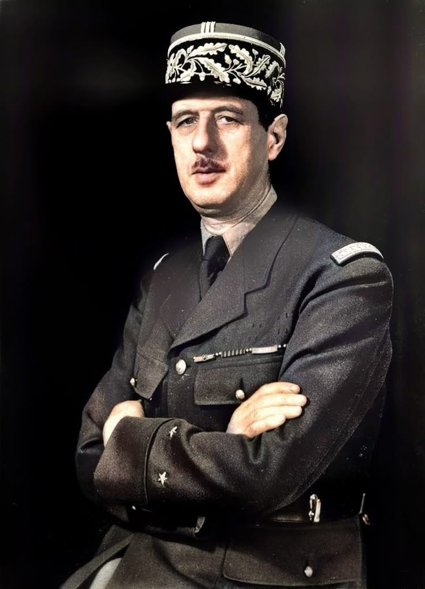

Sumber- Charles de Gaulle (1890–1970) Charles de Gaulle adalah pemimpin militer dan politik Prancis yang terkenal karena perannya dalam Perang Dunia II dan sebagai pendiri Republik Prancis Kelima. Ia memimpin perlawanan Prancis terhadap Jerman Nazi dan kemudian menjadi Presiden Prancis yang kuat.
Nama lengkap: Charles André Joseph Marie de Gaulle
Lahir: 22 November 1890 di Lille, Prancis
Pendidikan: Akademi Militer Saint-Cyr (setara West Point di AS) Menjadi perwira Angkatan Darat Prancis
Saat Jerman menginvasi Prancis (1940), pemerintah Prancis menyerah, tetapi De Gaulle menolak menyerah Ia melarikan diri ke London dan mendirikan pemerintahan Prancis Bebas Pada 18 Juni 1940, ia menyampaikan pidato terkenal di BBC, menyerukan rakyat Prancis untuk terus berjuang Memimpin pasukan Prancis Bebas dalam perlawanan terhadap Nazi
1. Perdana Menteri Sementara (1944–1946)
Setelah Paris dibebaskan, De Gaulle menjadi pemimpin sementara Prancis Mengundurkan diri karena konflik politik
2. Mendirikan Republik Kelima (1958)
Prancis mengalami krisis karena perang di Aljazair De Gaulle kembali berkuasa dan membentuk Republik Kelima, dengan sistem presiden yang lebih kuat
3. Presiden Prancis (1959–1969)
Mengakhiri Perang Aljazair (1962) Menjaga Prancis sebagai negara kuat dan independen di tengah Perang Dingin Menolak dominasi AS dan keluar dari komando militer NATO (1966) Mundur dari jabatan pada 1969 setelah kalah referendum
Meninggal dunia: 9 November 1970 di Colombey-les-Deux-Églises, Prancis.
Dikenang sebagai pahlawan nasional Prancis yang mengembalikan kebanggaan negara setelah Perang Dunia II. Bandara Charles de Gaulle di Paris dinamai untuk menghormatinya De Gaulle adalah simbol kekuatan dan kebanggaan Prancis.